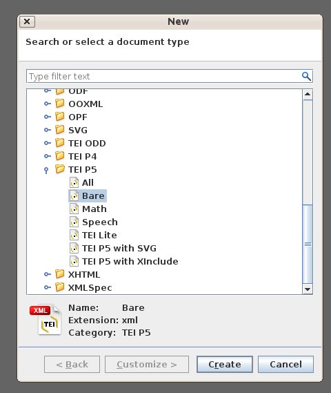
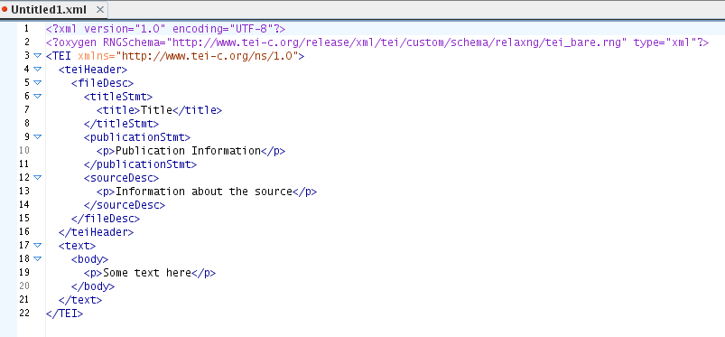
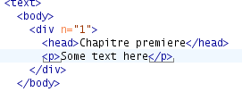
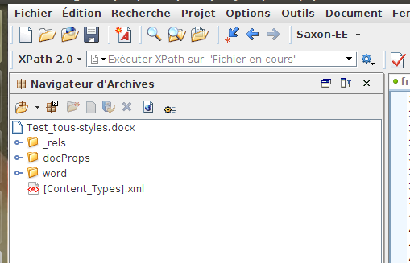
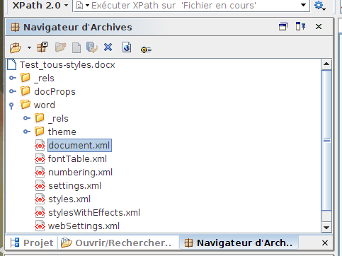
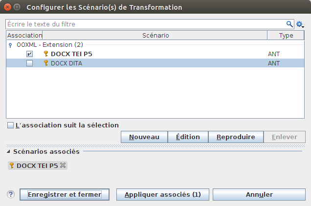
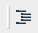

Cet exercice consiste à encoder un document en utilisant un schéma XML. Ce tutoriel vous guide pas à pas pour toutes les étapes de la procédure. Vous apprendrez à vous servir de l’éditeur XML oXygen pour :
Pour réaliser cet exercice, vous devez préalablement avoir installé l’éditeur XML oXygen sur votre ordinateur personnel.
Nota : L’indication des raccourcis claviers est valable pour les systèmes d’exploitation Linux et Windows, pour Mac OS, remplacez la touche CTRL par la touche CMD.
La TEI n’est pas seulement destinée à l’encodage des documents anciens, déjà existants inscrits sur papier ou dans la pierre. Elle peut aussi servir à la création de nouveaux documents créés ex nihilo.
Avec ce premier exercice nous vous proposons d’apprendre à créer un premier document TEI avec l’éditeur XML oXygen.
CTRL + N) pour ouvrir la boîte de dialogue de création d’un nouveau document
La fenêtre d’oXygen affiche maintenant un document TEI que vous allez pouvoir compléter. Le schéma TEI bare que nous avons utilisé propose un ensemble de balises minimum, mais il permet quand-même de décrire un document TEI complet.
Vous vous trouvez maintenant dans l’espace de travail typique d’oXygen. Par défaut, il y a plusieurs petites fenêtres, autour d’une grande zone blanche où nous allons pouvoir éditer notre document. À gauche, par exemple, vous pouvez voir dans la fenêtre Sommaire un aperçu de la structure du document. Vous pouvez si vous le souhaitez réduire les autres fenêtres ou les fermer (en conservant la fenêtre principale et la vue sommaire).
Notez qu’un document TEI est composé de deux parties. D’abord, vous trouvez les métadonnées sur le document comprises dans une balise <teiHeader>. Ensuite, se trouve le texte, à l’intérieur d’une balise <text>.

Il est possible de modifier le mode d’affichage du document en cliquant sur les boutons Texte, Grille, ou Auteur. Nous, on n’a pas peur des balises, donc on va commencer à l’éditer en mode Texte !
On va d’abord devoir renseigner les métadonnées essentielles à tout nouveau document : son titre, sa diffusion, et ses origines. oXygen vous propose du texte par défaut qu’il faut changer puis compléter…
oXygen vous aide à maintenir votre document dans un état valide. Qu’arrive-t-il si vous endommagez votre document ?
</publicat>) : le document reste donc bien formé. Mais il n’est plus valide par rapport au schema TEI bare (qui ne contient pas la balise ‘publicat’). Par conséquent, les balises fautives sont soulignées en rouge ; il y a un message d’erreur en bas de l’écran ; et en haut à droite, un voyant rouge qui signale le problème de validité contre le schéma.CTRL + Z (ou sélectionnez Undo du menu Éditer) pour revenir dans un état de grâce… vous vous apercevrez que le petit carré rouge en haut à droite reprend une jolie couleur verte après correction de toutes les erreurs.En effet, selon le contexte, oXygen vous permet d’ajouter seulement des balises prévues par le schéma actuellement sélectionné pour le document (ici TEI bare).
</title> et avant la balise fermante </titleSmt>;< et arrêtez-vous un instant ;</author>.Enfin, nous sommes prêts à commencez la création de notre document... À vous de décider de son contenu et de son balisage.
D’abord, quels composants proposeriez-vous pour votre document ? Un document contenant un seul paragraphe n’est guère probable ! Avec le schéma bare vous avez le droit de signaler :
Allons-y !
Dans le reste de ce petit tutoriel, nous allons vous montrer quelques manipulations utiles offertes par ce logiciel.
D’abord, une question importante : Il faut bien sur que vous tappiez le contenu du texte, mais faut-il toujours taper soi-même les balises ? Pas vraiment : oXygen est là pour vous aider ! Vous avez déjà vu comment l’éditeur pouvait vous proposer la liste des balises disponibles à un certain emplacement du document. Il peut aussi vous suggérer comment baliser un morceau de texte sélectionné.
<p>Some text here</p>, y compris les balises.CTRL + E (ou sélectionnez XML Refactoring et ensuite Entourer des balises dans le menu Document).1, et votre document redeviendra valide.Votre document devrait maintenant ressembler à ceci :

À vous d’ajouter maintenant du texte à ce paragraphe : un peu plus intéressant que ‘some text here’ de préférence ! Décrivez-nous vos premières réactions avec oXygen ; partagez vos idées sur la situation politique actuelle ; écrivez ce que vous voulez.
Sans doute aurez-vous besoin de plus d’un seul paragraphe. Comment faire pour terminer celui-ci et commencer un nouveau ? Bien-sûr, on peut simplement taper les balises </p><p> mais il y a une plus simple manière de faire.
Supposons que vous avez maintenant quelques centaines de mots dans votre seul paragraphe, et que vous voulez le diviser en plusieurs.
ALT + MAJ + D ou sélectionnez XML Refactoring et ensuite Élément de division dans le menu Document.Vous pouvez faire pareil pour diviser le chapitre unique, mais attention à choisir un endroit valide pour effectuer la division : entre deux éléments <p>, et non pas dans l’enceinte d’un <p>.
Dans un de vos chapitres, n’omettez pas d’ajouter une liste, balisée avec un élément <list>, contenant une séquence de <item> éléments, précédée d’un <head> facultatif.
Afin d’afficher le texte de manière plus commode, vous pouvez aussi sélectionner dans le menu Document, puis Éditer, et choisir Activer/désactiver les sauts de ligne (ou bien taper CTRL + MAJ + Y).
Est-ce que la quantité de balises dans votre document commence à vous inquiéter un peu ?
On peut mettre en ordre le balisage que l’on a fait, en cliquant sur le bouton d’indentation, ou en tapant CTRL + MAJ + P, ou en sélectionnant Source -> Indenter le document sur le menu Document. Mais peut être préféreriez-vous voir disparaître les balises ?
Plus tard, nous verrons comment vous pourrez contrôler l’affichage de votre document avec une feuille de style.
La plupart des documents numériques que vous rencontrerez dans le monde actuel paraissent indemnes de tout balisage XML. Par exemple, les documents préparés à l’aide des outils bureautiques tels Microsoft Word ou Open Office se présentent en apparence comme du texte brut. En réalité, ce n’est qu’une apparence : derrière tout cela il existe un format XML, que l’on peut manipuler, et donc qu’on peut transformer dans un format XML TEI.
Dans le dossier Travaux vous trouverez un fichier nommé acteRoyale.docx et un autre acteRoyale.jpg : cliquez dessus pour les ouvrir. Il s’agit d’un document numérisé en mode image qui a ensuite été rapidement retranscrit avec Microsoft Word. On va se servir d’oXygen pour transformer cette transcription en XML TEI.
Un fichier Microsoft Word au format docx est une archive compressée qui contient plusieurs autres fichiers, y compris des fichiers XML qu’on peut gérer et transformer avec oXygen comme n’importe quel autre fichier XML. La conversion prend en compte les styles du document existant dans le fichier, et donc peut être personnalisée.
CTRL-o, ou cliquez l’icône dossier) et sélectionnez le fichier acteRoyale.docx dans votre dossier Travaux.

CTRL + MAJ + C. Ou cliquez sur la petite icône en forme de clef à molette (celui-ci : )
CTRL + MAJ + P ou cliquez sur le bouton Indent (celui-ci : ) pour regarder sa structureLa question qui s’impose : quelles balises devraient être disponible pour une représentation efficace des aspects les plus signifiants du document (questions, et réponses, paraphes, signature, date, abréviations, etc.) ?
En vous aidant d’oXygen pour identifier les balises disponibles aux différents endroits, remaniez l’encodage du document pour obtenir un document valide.
Remarques :
CTRL + E pour entourer du texte ou un élément par un autre élément.